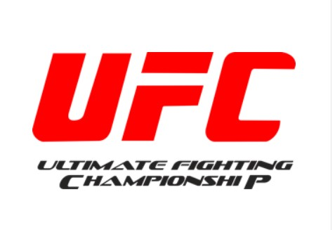
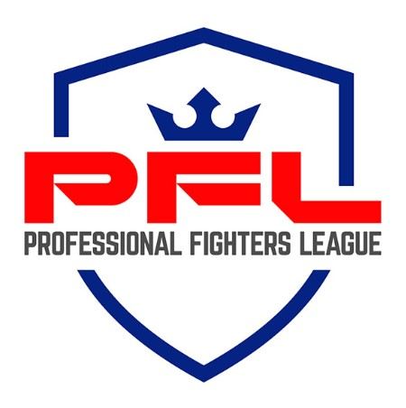
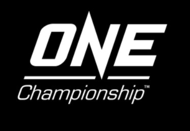

The Main MMA Organisations
The UFC
The Ultimate Fighting Championship (UFC) is a major MMA promotion company based in the United States. The UFC was founded in 1993 by Art Davie, Rorion Gracie, and Bob Meyrowitz. The first UFC event, UFC 1, was held on November 12, 1993, in Denver, Colorado. The event featured a single-elimination tournament with eight fighters representing different martial arts disciplines. The tournament was won by Royce Gracie, a Brazilian jiu-jitsu practitioner who defeated three opponents in one night to become the first UFC champion.
The PFL
The Professional Fighters League (PFL) is an American mixed martial arts league founded by venture capitalist Donn Davis in 2017 and launched in 2018, following the acquisition and restructuring of the former World Series of Fighting (WSOF) promotion in 2017 by MMAX Investment Partners. It is the first major MMA organization in which individual athletes compete in a regular season, post-season and championship, rather than on a year-round basis.
One Championship
One Championship (stylized ONE Championship or simply ONE; formerly One Fighting Championship (ONE FC) until January 2015) is a multinational combat sports promotion founded on 14 July 2011 by Chatri Sityodtong and Victor Cui. Originally focused on mixed martial arts (MMA), One has since expanded to regularly hold events featuring Muay Thai, kickboxing, and submission grappling bouts, while also previously promoting boxing and Lethwei matches. One held its first event on 3 September 2011 at the Singapore Indoor Stadium, and has since held over 200 events across Asia.